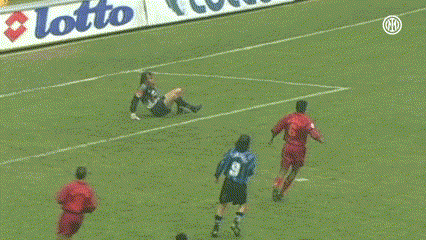
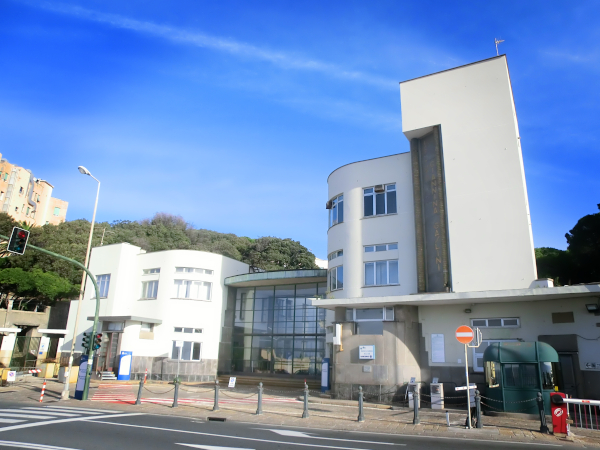

Paolo Michele Bruzzo nasce a Genova domenica 5 gennaio 1997.
Come a suo padre (dorianissimo) piace ricordare, lo stesso giorno di Udinese-Sampdoria 4-5, o come a Paolo piace sottolineare, lo stesso giorno di questo gol in semi-rovesciata del mitico
Youri Djorkaeff in Inter-Roma... una robetta da nulla.

Credits to FC Internazionale Milano
Paolo cresce nel quartiere di Rivarolo fino al 2003, quando si trasferisce nel Levante genovese, pur mantenendo saldo il suo contatto "spirituale" col Ponente.
Nel dicembre del 2004, durante la terza elementare, si ammala di broncopolmonite con versamento pleurico.
Ciò lo costringe a saltare praticamente due mesi di scuola e a sottoporsi a impegnative cure e a regolari day hospital.
Per il resto dell'a.s. 2004/05 e per l'intero a.s. 2005/06, Paolo è esonerato dallo svolgere educazione fisica a scuola e deve essere "tenuto sotto osservazione" da un tutore (genitori, insegnanti, adulti di ogni tipo) perché potesse essere asciugato qualora sudasse.

L'ingresso dell'ospedale Gaslini, che il piccolo Paolo, purtroppo, conobbe fin da presto.
Il "via libera" dei medici a riprendere l'attività fisica per l'a.s. 2006/07 viene quindi vissuto da Paolo come una liberazione: finalmente può ricominciare a giocare e a correre con gli altri bambini, sudando e sbucciandosi gomiti e ginocchia, com'è giusto alla sua età!
Prosegue nelle prossime puntate...